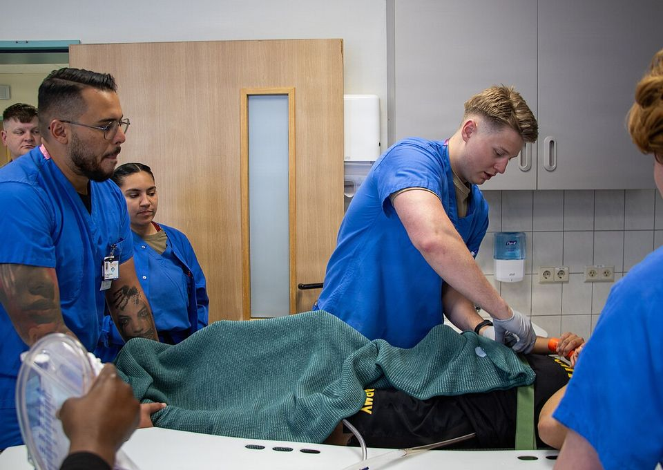
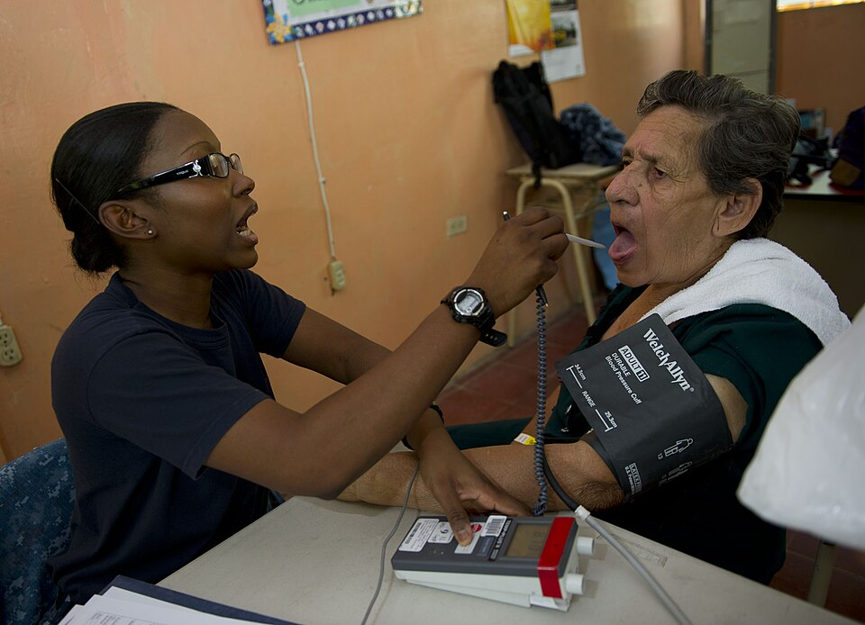
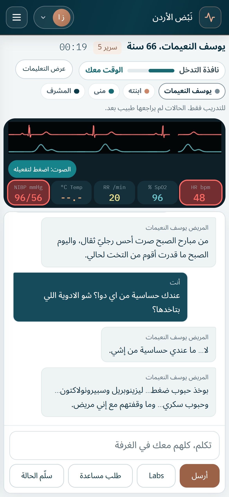
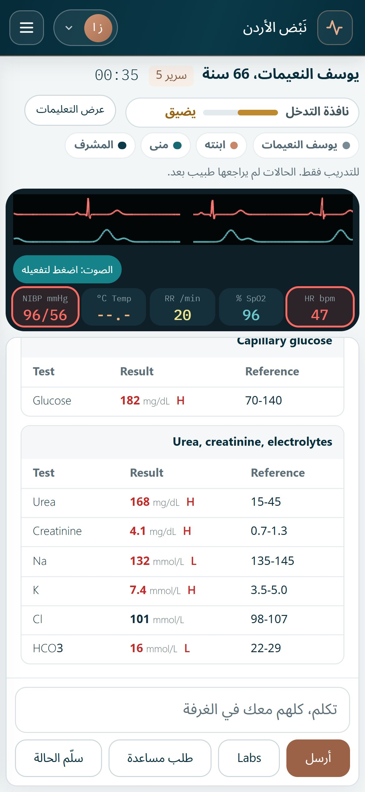
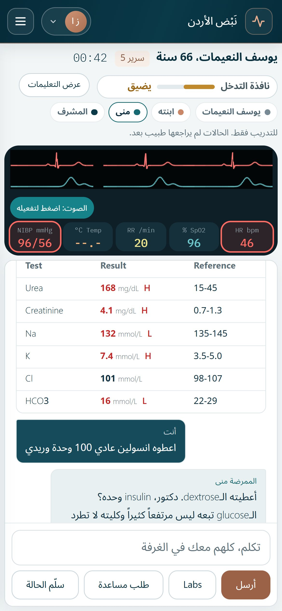
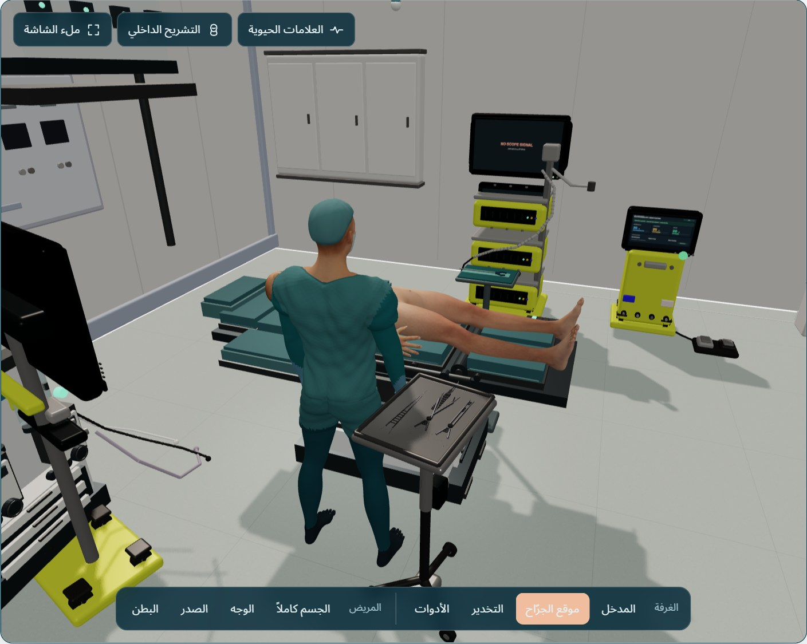
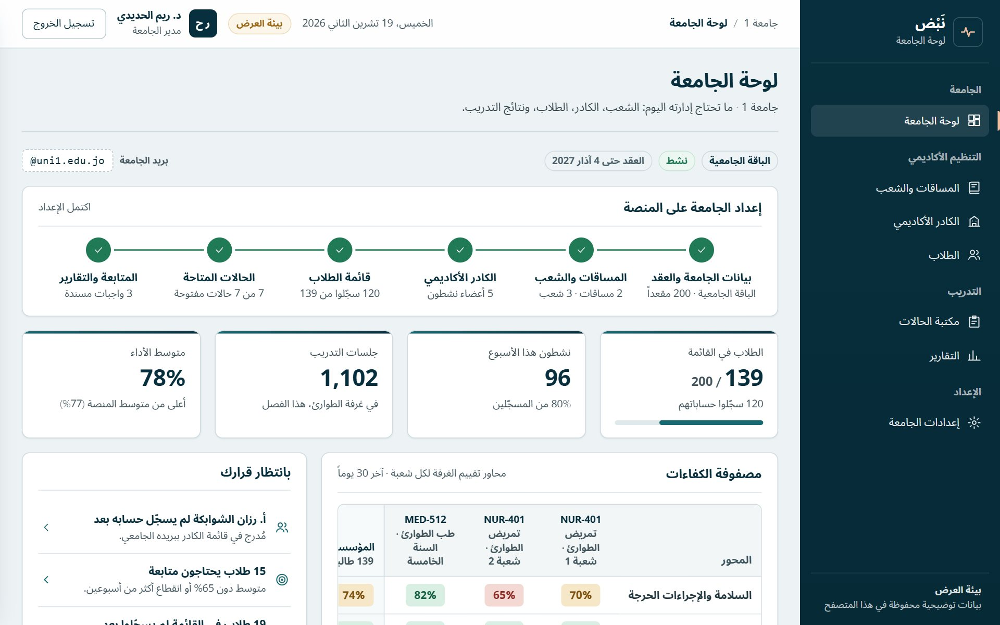
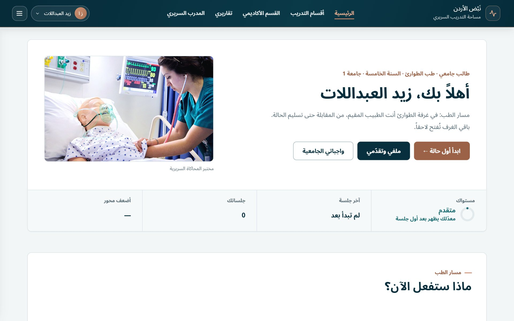
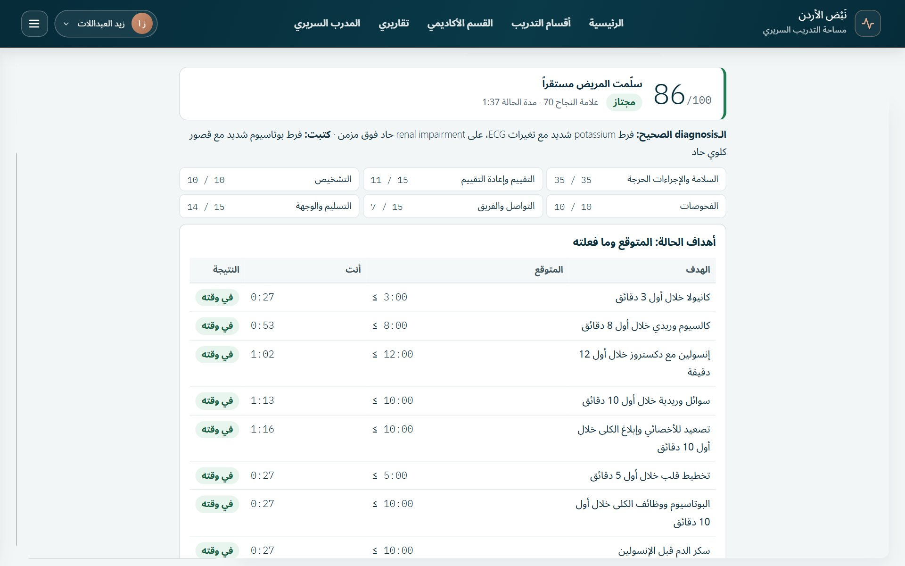

من نحن
من هندسة البرمجيات وعلم الحاسوب، بنينا نبض من الفكرة إلى منصة تعمل.
من يقف معنا
يشرف على نبض أكاديميون من كلية التمريض في جامعة الشرق الأوسط، ويدقّقون محتواه السريري ومعايير تقييمه.
المشكلة
طالب طب وتمريض في الجامعات الأردنية: 29,938 طب و39,799 تمريض
دائرة الإحصاءات العامة، الكتاب الإحصائي السنوي 2025طالب طب وتمريض لكل سرير: 16,363 سريراً في 121 مستشفى بالأردن
محسوب من دائرة الإحصاءات العامة 2025طلبتها ومشرفوها وصفوا مزاحمة الطلبة على الحالات وضيق فرص الممارسة
Albeitawi وآخرون، PLOS ONE 2025من طلاب التمريض يرون الخوف من ارتكاب الخطأ عائقاً في التدريب
Al-Dweik وآخرون، 2021 · 187 طالباًمن المرضى يرفضون أن يتولّى متدرّب علاجهم أو الإشراف على حالتهم


النتيجة: أول حالة حرجة يقرّر فيها الطالب قد تكون على مريض حقيقي.
الحل
تدريب عملي بعد المادة النظرية في الجامعة: يختبر الطالب نفسه، والمدرّب يعلّمه ويصحّح.




المريض على الطاولة والفريق حوله، والمشرف يرافق الطالب بالمحادثة خطوة بخطوة.
يردّ بزرّ فعل أو بالكتابة، والكاميرا تنتقل إلى ما يفحصه، والمشرف يصحّح الخطأ في لحظته.
خطوات السلامة الجراحية قبل الشق، ومنع أخطر الأخطاء: المريض الخطأ، والجهة الخطأ، والحساسية المنسية.
لمن نبض؟

B2C يقود إلى B2B
طلاب كثيرون من جامعة واحدة يدفعون من جيبهم = عقد مؤسسي

نموذج العمل
نحسبها لتناسب الطلبة والمؤسسات، وتغطّي التشغيل الكامل للمنصة.
قيد الدراسة: نسعّره بما يناسب الطالب الأردني في كل مرحلة دراسية ويغطّي تكلفة التشغيل، ليحصل على أفضل تجربة بسعر مناسب.
السوق
| vSim for Nursing | للتمريض فقط، بالإنجليزية · $100–120 للطالب لكل منتج سنوياً |
| Oxford Medical Simulation | واقع افتراضي، عقود مؤسسية · عقد جامعة بريطانية واحدة: £563,760 |
| Body Interact | مريض افتراضي، مكتبة كبيرة · عقود مؤسسية، السعر عند الطلب |
| نبض | عربي، طب وتمريض · اشتراك محلي بالدينار يناسب الطالب الأردني |
الأسعار: متجر Lippincott/Laerdal · سجل المناقصات البريطاني 2021 (Oxford Brookes) · موقع Body Interact

ما بعد هذه المرحلة
نطوّر نبض خطوة خطوة، وكل حالة جديدة تحت إشراف طبي.
قصة وفحص وفحوصات وعلاج وتقييم متكامل لكل حالة
فهم دقيق ومنسّق لعربية الطلاب ولهجات المرضى
إكمال لوحة التحكم وتدقيقها للإدارة والمشرفين
تنسيق عدد أكبر من الحالات في الأقسام التخصصية كلها
سيناريوهات جراحية جديدة بواقعية أعلى
كل حالة يراجعها مختص قبل نشرها
تتحمّل أعداداً أكبر من الطلاب في الوقت نفسه
في الأردن، ثم في المنطقة العربية